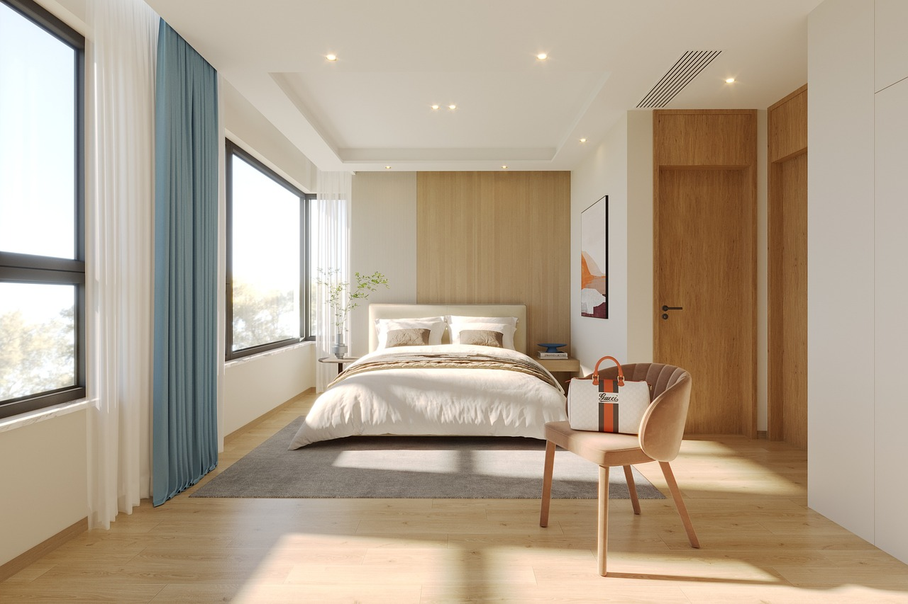
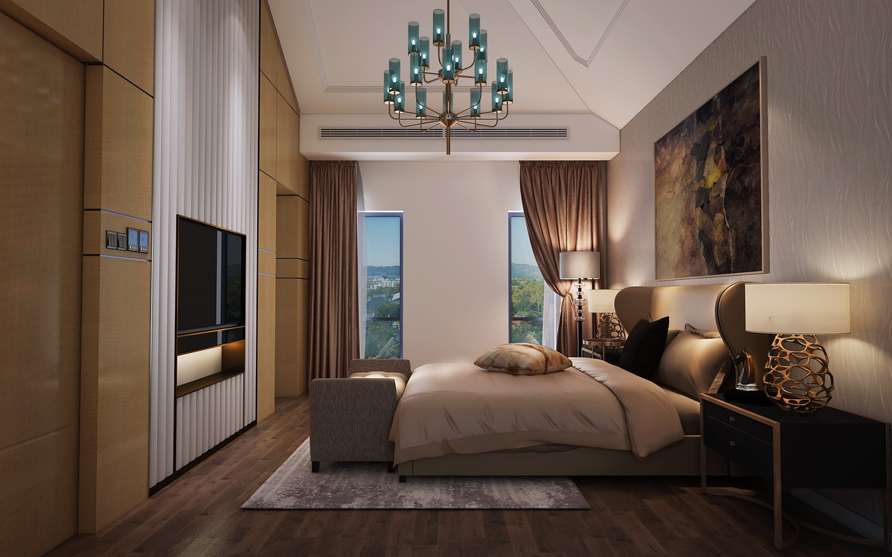

Unsurprisingly, your bed is the main focal point in your bedroom, so use this as
a starting point to plan your redesign. Take a look at these bed frames from
bedkingdom.co.uk for inspiration and start thinking about which materials and
colours will work best in your room. With free delivery to most of the UK and a
price match guarantee, Bedkingdom makes it easy to upgrade your bedroom design
on any budget.
Metal bed frames can be ideal if you want a sleek, contemporary style, while
ottoman beds are perfect for creating extra storage. When you’re redesigning a
guest room, a trundle bed or ottoman bed can be used to maximise space as well
as creating a pleasing aesthetic.

Once you’ve selected a bed frame, you’ll be able to decide how to upgrade your furniture and enjoy a seamless, cohesive design. If you’re short of space, choose furniture with clean lines in unobtrusive colours or materials. Too much chunky furniture can easily make a room feel overcrowded, so look for pieces that are functional and stylish without being too impactful.

If you want to enhance your sleep quality, choose colours and shades that are known for their relaxing properties. Cooler hues, such as sky blue or soft green, generate a feeling of calmness, which can make them a great choice in bedrooms. Choosing a single colour for the walls can also help to make a room feel bigger than it really is, so stick to one shade if you want to create the illusion of space in your bedroom.
Changing the lighting is one of the fastest and most effective ways to upgrade any room. It’s easy to change the light fixtures and fittings in your bedroom but you’ll be surprised at the impact it can have. When you use a range of different lighting options to create a layered effect, you can modify the illumination at any time. Using wall lights and lamps creates a warmer and more peaceful environment than bright ceiling lights, for example.
Hanging artwork on the walls ensures you can incorporate your favourite styles and trends into your bedroom décor. In addition to this, artwork can be used to create another focal point in the room and the right piece will draw other design elements together to enhance the overall aesthetic.
- mirrors
- pictures
- candles
- plants
- rugs